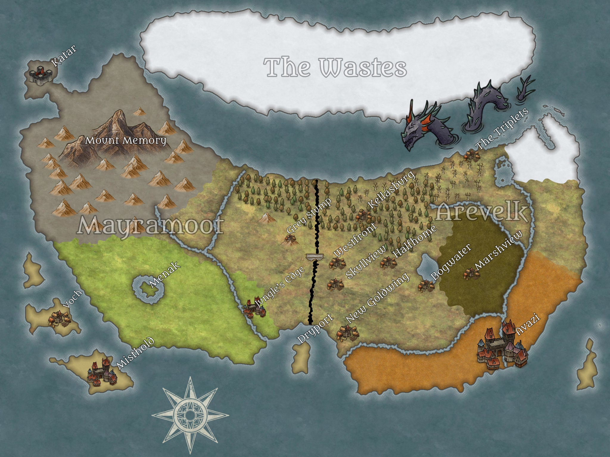

Hi! This is the wiki for my homebrew DnD world. I figured I would put commonly known things about the world here so they would be easy to refer back to.
One day The Divide appeared in the center of the country, swallowing up the royal castle. The old king, G.H. Kaiser, fell into the chasm along with his castle. This left his sons to inherit the kingdom.
Rock E. Kaiser, the eldest son, believed it was his birthright to rule, and began to build his Eastern forces in Avazi, the city of sand. Scissior Kaiser, the middle child, believed he had earned the right to rule the land through his many conquests in the west, and gathered his forces at Misthold. The youngest, Payp R. Kaiser, could not stand the fighting and took a handful of men to The Wastes. They have not been heard from since.
For 25 years the war between The Brightarrows of the east and The Masons of the west has raged on, though it is slow going due to the massive chasm between the nations.